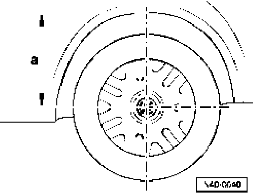

Self-Leveling Suspension, Basic (Default) Setting
Self-leveling suspension, basic (default) setting
- Check basic setting of self-levelling suspension.
Connect VAS5051 and progress until the "Function/component selection" is displayed go to Connecting VAS 5051 and selecting functions
- Press "Suspension".
- Press "Self-leveling suspension".
- Press "01 -On Board Diagnostic (OBD)".
- Press "Functions".
- Press "Basic setting".
The VAS5051 will now display the specifications for basic setting.
- Measure actual ride heights on vehicle go to Measuring ride height.
- If the values deviate, the values measured for the self leveling suspension must be entered into the control module using VAS5051.
The self-levelling suspension control module "calculates" the entered values and then sets the vehicle at the level for the basic (default) setting.
Measuring ride height

Ride height - a - is measured vertically from the fender or lower edge of quarter panel to center of wheel.
The specifications are located in Vehicle Diagnosis, Measurement and Information System VAS 5051.